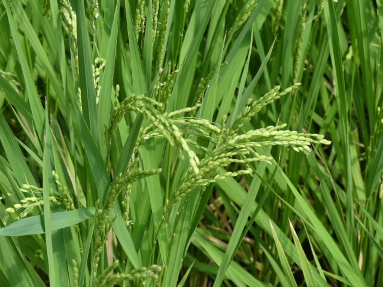
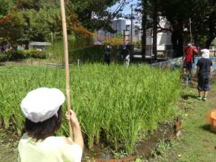
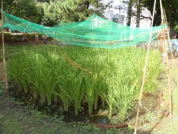
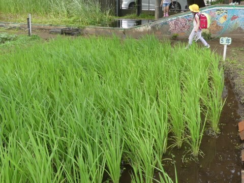
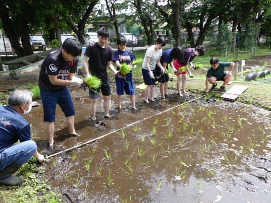
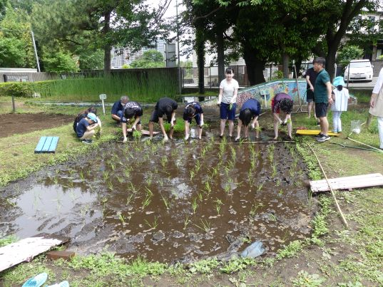
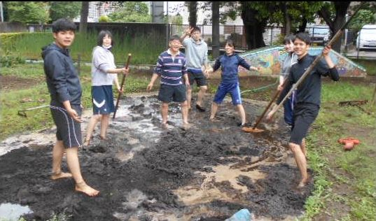

５年生のページ
日課表
５年１組
５年２組
学年だより９月号


８月１日から８月16 日までの課題
学年だより７月号


これまでの記事
さらに１ヶ月後 ８月２７日
お米が実ってきたので鳥に食べられないように網（あみ）を張りました。



２ヶ月後 ７月２７日
すくすくと稲が生長してきました。

稲作 その２ 「田植え」 ５月２７日
先週の代かきに続いて、今日は田植えを行いました。約４本ずつ植えていきます。 竹のぼうに印があるので、等間かくに植えることができます。竹のぼうに合わせて横１列に並び、植えたらどんどんと 後ろに下がっていきます。下の写真や動画はその様子です。学校に来たら田んぼを見てみましょう。


稲作 その１ 「しろかき」 ５月２０日
この時期に５年生は総合的な学習の一環として地域の「野良の会」の方にご指導いただきながら、
「米作り」の体験学習をします。今年も地域の方に苗いただきました。ご支援ありがとうございます。
最初は、田に水を張り、土を軟らかくするため、腐葉土を加えて耕します。これを代（しろ）かきと呼びます。
本来なら児童が行うのですが、今回は職員で学校の田んぼを耕しました。下の写真や動画はその様子です。（つづく）
